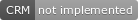

3. Central Resource Manager API¶
The Central Resource Manager (CRM) manages resources in the RISE drone platform. RISE hosts the CRM on a server based in Kista and the way to access it is via an OpenVPN-connection. The CRM can be hosted on any unix machine.
3.1. Communication¶
The Central Resource Controller offers two external interfaces towards all clients: the CRM Ctrl Reply-socket for sending requests to and the CRM Info Publish-socket that publishes the client lists as soon as there are changes. API for the reply-socket is described in CRM Ctrl-link API.
The CRM is available for all connecting ip-numbers on a given port. RISE hosts several CRM instances on the same server so the port numbers are not fixed. RISE uses different subnets in the VPN solution in combination with firewall settings to separate different CRM instances and clients running different operations. Clients from one subnet can only communicate with the assigned CRM instance and to other clients on the same subnet.
The port of the CRM running on each subnet is calculated as subnet*100, where subnet can be identified from the IP-address like so: 10.44.subnet.xxx.
The IP (VPN) address to the RISE-server called dronehost is
10.44.160.10.
The dronehost also hosts a web server with visualisation of crm status, it is reached at ‘’10.44.160.10’’, port ‘80’.
The port used for Info Publish-socket is not deterministic must be requested using the Fcn: get_info.
> ./crm.py --help
usage: crm.py --ip IP --port PORT [--stdout] [--virgin]
CRM "Central Resource Manager"
optional arguments:
--ip IP public ip of the CRM server
--port PORT defines the port for the ctrl-reply socket
--stdout enables logging to stdout
--virgin defines if to start from a backup or not
3.2. CRM Ctrl-link API¶
3.2.1. General¶
The ZeroMQ REQ/REP interface takes function calls as JSON objects with two mandatory keys, “fcn” and “id”, the string values are the function name and the application id. Additional keys are described in this API chapter. Each function call gets an ack or a nack where the key “call” holds the name of the calling function. A generic example follows:
Function call from client to Central Resource Controller:
1{
2 "fcn": "<function name>",
3 "id": "<requestor id>"
4}
Response from Central Resource Controller is an ack or a nack. The key “call” carries the name of the function called. Some functions uses the ack reply to transfer data, refer to API. A nack includes the key “description” that carries a nack description string.
1{
2 "fcn": "ack",
3 "call": "<function_name>"
4}
1{
2 "fcn": "nack",
3 "call": "<function name>",
4 "description": "Some text describing the issue"
5}
3.2.2. Fcn: register¶
All clients (i.e applications and DSSs) in the network registers to
the CRM. It is done via the function register. The CRM will reply
with a unique id that the client from this point must use in all calls
to all clients, including calls to the CRM.
The key id must be set to an empty string (see note below though).
Set keys name and description per your own choice. For key
type supply your type: ‘da’ for drone application, ‘dsa’ for drone
support application and ‘dss’ for DSS. Also provide the local ip
address as a string in key ip and your reply port as an in in key
port, this is how other clients will make contact with your
client.
All clients must provide a list of capabilities. However, note that
this list is allowed to be empty. Each capability is represented as a string.
The lists of capabilities are used by the CRM to allocate available resources when
applications require a drone with certain capabilities to perform a task. The following capabilities are supported:
SIM - Drone is simulated
REAL - Drone is not simulated
C0 - Drone is C0 compatible, below 250g. Note second char is a zero - Charlie Zero.
RTK - RTK compatible
RGB - RGB camera compatible
IR - IR camera compatible
LMD - Drone can do last mile delivery, can carry and drop load.
STREAM - Drone can stream video
SPOTLIGHT - Drone has a spotlight
If the CRM responds with an ack and the registering client is DSS it shall set it’s owner to ‘crm’.
Note
When register is called by a client, it is unaware of its id (exceptions exist). Use empty string for id unless CRM initiated your process and already allocated a specific id.
1{
2 "fcn": "register",
3 "id": "",
4 "name": "DSS HX003",
5 "desc": "<description>",
6 "capabilities": ["C0", "REAL"],
7 "type": "dss",
8 "ip": "<ip>",
9 "port": 1234
10}
The reply holds the unique id that is used in all communication.
1{
2 "fcn": "ack",
3 "call": "register",
4 "id": "<assigned client id>"
5}
- Nack reasons:
bad arguments
bad ip
3.2.3. Fcn: unregister¶
The function unregister is used to tell CRM that a client will not longer be available on the network. The CRM replies with an ack if the id is currently registered, otherwise nack.
If the CRM responds with an ack and the calling client is DSS it shall set it’s owner to ‘da000’.
1{
2 "fcn": "unregister",
3 "id": "<requestor id>"
4}
- Nack reasons:
bad arguments
unknown requestor id
3.2.4. Fcn: get_info¶
The function get_info requests status information of the CRM.
get_info¶1{
2 "fcn": "info",
3 "id": "<requestor id>"
4}
get_info¶1{
2 "fcn": "ack",
3 "call": "info",
4 "id": "<replier id>",
5 "info_pub_port": 1234,
6 "data_pub_port": 5678
7 "version": "<version>",
8 "git_version": "<version>-<hash>"
9}
3.2.5. Fcn: get_drone¶
The function get_drone requests a drone resource from the CRM. Specific capabilities or unique drone id can be requested. It is mandatory to use one of the two arguments “capabilities” and “force”.
1{
2 "fcn": "get_drone",
3 "id": "<requestor id>",
4 "capabilities": ["RGB", "RTK"]
5}
1{
2 "fcn": "get_drone",
3 "id": "<requestor id>",
4 "force": "<forced id>"
5}
The CRM replies with id and endpoint information:
1{
2 "fcn": "ack",
3 "call": "get_drone",
4 "id": "<assigned drone id>",
5 "ip": "<ip>",
6 "port": 1234
7}
- Nack reasons:
bad arguments
unknown requestor id
unknown forced id
forced id not available
forced id is stale
No available drone with requested capabilities
3.2.6. Fcn: get_performance¶
The function get_performance requests the CRM to reply with information about the performance of the computer where the CRM is running, including CPU, memory and load.
1{
2 "fcn": "get_performance",
3 "id": "<requestor id>"
4}
The CRM replies with an ack and a string which captures the performance information:
1{
2 "fcn": "ack",
3 "call": "get_performance",
4 "performance": "000.0% @ 1701.6182499999998MHz x 24 (000%, 000%, 000%) - 005.6% of 20048MB - time 07:40:19"
5}
3.2.7. Fcn: get_processes¶
The function get_processes is designed to be used by a front-end application, in order to present the active processes on the computer where the CRM is running. Each process will be tagged with a ‘killable’ flag, and only the processes associated with the project in the request will be ‘killable’.
1{
2 "fcn": "get_processes",
3 "id": "<requestor id>",
4 "project": "<project name>"
5}
The CRM replies with an ack and a list of all the processes in JSON-format
1{
2 "fcn": "ack",
3 "call": "get_processes",
4 "processes": "[<info_object_1>, <info_object_2>]"
5}
where each info object contains the following information:
1{
2 "project": "<project id>",
3 "cmd": "python3 ./crm.py --ip 10.44.160.10 --port 16300",
4 "memory_percent": "1.1",
5 "cpu_percent": "0.1",
6 "killable": true,
7 "created": "2023-01-03 10:26:54",
8 "pid": 34253,
9 "name": "process name"
10}
3.2.8. Fcn: kill_process¶
This function request the CRM to kill a specific process. Use with caution! It is intended to be used by the front-end, which only presents the ‘killable’ processes to the user. This function is only acked when the requester is a root application.
1{
2 "fcn": "kill_process",
3 "id": "<requestor id>",
4 "pid": "<process id>"
5}
3.2.9. Fcn: release_drone¶
The function release_drone can be called when as soon as a dss “is parked”. CRM will take back the ownership and the drone application can disconnect from the dss.
1{
2 "fcn": "release_drone",
3 "id": "<requestor id>",
4 "id_released": "<dss id>"
5}
The CRM replies with an ack if the requestor is the current owner of the dss, otherwise nack:
1{
2 "fcn": "ack",
3 "call": "release_drone"
4}
3.2.10. Fcn: handover¶
|  |
The function handover is used to pass on a drone to an other appliction, for example during a drone swap manouver. If the drone is handed over to a non existing application or if the application does not receive the new drone CRM will take ownershop of the drone.
1{
2 "fcn": "handover",
3 "id": "<requestor id>",
4 "id_released": "<dss id>",
5 "id_new_owner": "<new_owner_id>"
6}
- Nack reasons:
requestor is not current owner
3.2.11. Fcn: launch_app¶
The function launch_app requests CRM to launch the app specified by the key “app”. The argument is the filename complete filename of the process to start.
It can take some time to find available ports for the launched app. Therefore, the reply does not hold enpoint information, but id information. The user must call Fcn: clients and look for the client id until the enpoint information is available.
The command takes the optional argument extra_args, which can be skipped completly. If specified though, it must be a list of strings which will be passed directly to the application as command line arguments.
1{
2 "fcn": "launch_app",
3 "id": "<requestor id>",
4 "app": "app_monitor.py",
5 "extra_args": ["--log=debug"]
6}
The CRM replies with an ack and the id of the app just launched.
1{
2 "fcn": "ack",
3 "call": "launch_app",
4 "id": "<assigned application id>"
5}
3.2.12. Fcn: clients¶
The function clients requests a JSON-formatted string which contains all connected clients. The key “filter” can be used to filer only the matching client id’s of interest, for example “dss” to get all connected dss’s, “dss001” to get a specific dss or an empty string “” to get all clients. In the return value there is a JSON struct with id’s a keys holding JSON structs with all info.
1{
2 "fcn": "clients",
3 "id": "<requestor id>",
4 "filter": "<client id filter>"
5}
The CRM replies with an ack and the client information that that matches the search patternand.
1{
2 "fcn": "ack",
3 "call": "clients",
4 "clients": {
5 "dss001": {"name": "hx-003", "desc": "Drone, green", "type": "dss", "owner": "da001", "ip": "<ip>", "port": 5789},
6 "dss002": {"name": "hx-004", "desc": "Drone, blue", "type": "dss", "owner": "crm", "ip": "<ip>", "port": 5789},
7 "da020": {"name": "AppKeyboard", "desc": "test application for debugging", "type": "da", "owner": "crm", "ip": "<ip>", "port": 5789}
8 }
9}
- Nack reasons:
bad arguments
unknown requestor id
3.2.13. Fcn: app_lost¶

|

|
The function app_lost is called by a DSS that has lost the link to its application owner. This happens when no hearbeat message has been received in the last 5 seconds, or if the application called Fcn: disconnect.
1{
2 "fcn": "app_lost",
3 "id": "<requestor id>",
4}
The CRM replies with an ack. CRM can decide to recover or redistribute the DSS or just let the DSS recover for it self.
1{
2 "fcn": "ack",
3 "call": "app_lost"
4}
3.3. CRM Info-link API¶
The CRM can publish information on a publish socket. The format for each attribute is described in the following sections.
3.3.1. CLIENTS - Client list updated¶
As soon as there are changes to the clients list of the CRM it will publish the updated client list under topic “clients”. The message is equal to the response of the clients command, Fcn: clients.
clients¶1{
2 "dss001": {"name": "hx-003", "desc": "Drone, green", "type": "dss", "owner": "da001", "ip": "<ip>", "port": 5789},
3 "dss002": {"name": "hx-004", "desc": "Drone, blue", "type": "dss", "owner": "crm", "ip": "<ip>", "port": 5789},
4 "da20": {"name": "AppKeyboard", "desc": "test application for debugging", "type": "da", "owner": "crm", "ip": "<ip>", "port": 5789}
5}
3.4. Flows¶
Below follows some flows that helps describing how the platform is designed to be used.
3.4.1. Drone ownership flow¶
When using the Central Resource Controller each Drone Safety System instance has its owner that has been negotiated with the Central Resource Controller. The Central Resource Controller can also make decisions to reallocate the resources among the clients based on priorities. The ownership flow is the following.
3.4.1.1. Flow with one DSS, one application and the CRM:¶
1. The DSS sends the register command to the CRM. The CRM responds
with ack and a unique identifier for the client. The CRM owns the
client.
2. An application (e.g. da001) requests a drone from the CRM by
issuing Fcn: get_drone. CRM assigns a DSS (e.g. dss001) to the
application by calling the function Fcn: set_owner. After that,
the application can control the DSS. Note: The application will not
get notified, but can easily check the ownership with the
Fcn: clients command.
3. As the application (e.g. da001) has finished it’s mission, it
issues Fcn: release_drone to the CRM. The CRM then takes
ownership of the DSS (e.g. dss001) by calling Fcn: set_owner.
Note: It is good practice for the application to monitor the ownership
of the DSS and first shutdown once the ownership is successfully
transferred back to the CRM.
3.4.1.2. Flow where there is a drone change:¶
Preconditions: dsa001 is the owner of dss001, dsa001 has called CRM for a drone replacement via launch_app. A drone helper application has been launched (dsa002) and been assigned a drone (dss002) and is ready to switch drones.
1. dsa002 parks dss002 and issues Fcn: release_drone to CRM. The CRM claims ownership by calling Fcn: set_owner to dss002 and maintains it’s heartbeats to dss002.
2. dsa002 calls Fcn: release_dss DEPRICATED to dsa001, and starts issuing Fcn: get_owner to dss001 in 1Hz - waiting to be able to get the drone assigned from the CRM.
3. dsa001 parks dss001 and then issues Fcn: release_drone to CRM. The CRM claims ownership by issuing Fcn: set_owner to dss001 and maintains it’s heartbeats.
4. dsa001 issues Fcn: get_drone to the CRM. This triggers the CRM to set the ownership of dss002 to dsa001 and dsa001 can continue mission.
5. dsa002 has noticed that dss001 is available and issues Fcn: get_drone from CRM and gets the ownership of dss001.
3.4.1.3. CRM owns flying DSS:¶
Preconditions: CRM has the ownership of a flying DSS.
3.4.1.4. TYRAmote sends follow_me = fasle:¶
Preconditions: TYRAmote, TYRApp, DSS and CRM are connected and DSS is following TYRAmote. TYRAmote sends follow_me = false.
3.4.1.5. TYRAmote quits by unregister:¶
Preconditions: TYRAmote, TYRApp, DSS and CRM are connected and DSS is following TYRAmote. TYRAmote quits by X-icon and therefore sends unregister to CRM.
3.4.1.6. TYRAmote crashes:¶
Preconditions: TYRAmote, TYRApp, DSS and CRM are connected and DSS is following TYRAmote. TYRAmote crashes.
3.4.1.7. Drone change:¶
Preconditions: App, DSS1, DSS2 and CRM are connected. DSS1 is flown by App and App has requested a drone cheange. Drone helper has started, received DSS2 and taken off. DSS1 and DSS2 publishes LLA messages.